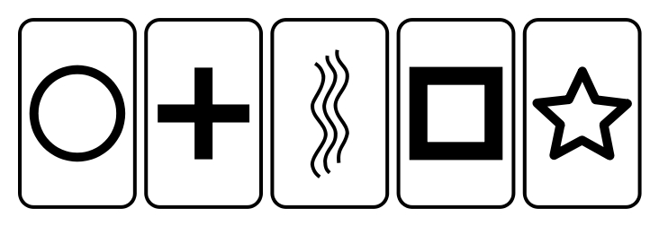

You can also download a PDF copy of this homework assignment.
Instructions: These homework problems will help familiarize you with the process of conducting a statistical test concerning the parameter \(p\). For each problem conduct all five steps of the statistical test (state the hypotheses, check the sample size, compute the test statistic, compute the p-value, and make a decision). Also note that you will need to use statdistributions.com to compute p-values. The solutions are given at the end.1
Recall from previous homework assignments the method for testing for extra sensory perception (ESP) using Zener cards. Assume the deck contains 25 cards — five cards of each of five different symbols as shown in the figure below.

To test a subject for ESP, the deck is first shuffled and then the experimenter selects a card, studies it, but does not show it to the subject. The subject is then asked to read/guess the symbol on the card. This process is repeated until the deck is exhausted, although it can be repeated as many times as desired. The subject is not told until the end if and when they were correct or incorrect so that they cannot “count cards” to improve their chance of guessing later cards in a deck. The distribution of a single observation (i.e., the population distribution) is given in the table below.| Response | Probability |
|---|---|
| correct | \(p\) |
| incorrect | \(1-p\) |
That is, a subject will correctly read/guess a card with probability \(p\), and incorrectly read/guess the card with probability \(1-p\). Note that \(p\) is unknown unless we assume that a subject does not have ESP and can only guess the card.
The table below shows the results from testing four subjects. Each row shows the name of the subject, the number of times they correctly read/guessed the card, and the number of cards used (e.g., Frodo guessed the correct card 12 times out of a total of 50 cards).| Hobbit | Correct | Cards |
|---|---|---|
| Frodo | 12 | 50 |
| Merry | 15 | 50 |
| Pippin | 24 | 100 |
| Sam | 30 | 100 |
Suppose we want to determine for each subject if there is any evidence that they have some capacity for ESP, which would be demonstrated by showing that their probability of a correct response (i.e., \(p\)) exceeds that of guessing. Conduct a statistical test concerning \(p\) for each subject to determine if they are guessing or actually posses some capacity for ESP. Use a significance level of \(\alpha\) = 0.01. (Hint: This problem is similar to the Pounce game example discussed in lecture, except rather than there being three words to choose from there are five symbols.)
Researchers conducted a study to compare the effects of Vegemite and Marmite as foot hair softeners for Hobbits. For each of 100 Hobbits they selected one foot at random to which to apply Vegemite. Marmite was applied to the other foot. This was done every day for a week. Afterwards each Hobbit was asked which foot they thought had softer hair. Forty Hobbits thought that the foot to which Vegemite was applied had softer hair. Let \(p\) denote the probability that a Hobbit will decide that Vegemite resulted in softer hair than Marmite. If one substance is more effective than the other then there should be a higher than chance probability that the foot with that substance would be selected. Conduct a statistical test to determine to determine if there is evidence that one substance tends to soften foot hair more than the other. Use a significance level of \(\alpha\) = 0.05.
Gregor Mendel was a 19th century Augustinian friar who conducted experiments with pea plants to investigating heredity. In one classic experiment he bred pea plants by crossing plants from a strain that only produced green peas with another strain that only produced yellow peas. The first-generation offspring from this crossbreeding then produced a strain of pea plants that were presumed to carried the genes for both yellow and green peas — one from each parent. However these plants only had yellow seeds because it was assumed that the yellow genes are dominant in the sense that an offspring with at least one gene for yellow peas will always have yellow peas. The only way for a plant to have green peas is if both genes were for green peas. The plants from the first-generation offspring were then crossed with themselves to produce the second-generation offspring. Mendel hypothesized that the probability of a second-generation offspring having green peas is 0.25 based on specific assumptions about how inheritance works for that particular trait. But if Mendel was wrong then the probability of offspring with green peas would not be 0.25. To test his conjecture Mendel bred 8023 second-generation offspring, of which 2006 were found to be green. Use a statistical test with a significance level of \(\alpha\) = 0.01 based on Mendel’s hypothesis.
Note: Usually it is the alternative hypothesis is what is predicted by scientific theory. This example is an exception because Mendel’s theory of inheritance implies the null hypothesis.
The kinds of inheritance mechanisms that Mendel hypothesized for plants are sometimes found in animals and humans, but not all traits are inherited in this way. Mary Lyon investigated if the trait of “twirling” in “twirler mice” exhibited Mendelian inheritance.2 A twirler mouse exhibits a behavior of shaking their head horizontally and circling. Lyon conducted a study similar to design to Mendel’s pea study, but with mice. She raised 142 second-generation mice, of which 84 exhibited the twirling trait. Mendelian inheritance would hypothesize that the probability that a second-generation offspring would have the twirling trait is 0.75, but if the trait does not exhibit Mendelian inheritance then the probability would be something else. Use a statistical test with a significance level of \(\alpha\) = 0.05 based on the hypothesis that twirling in twirler mice exhibits Mendelian inheritance.
The null and alternative hypotheses for each subject will be the same. They are \(H_0\!: p = 0.2\) and \(H_a\!: p > 0.2\). Although we could consider using \(H_a: p \neq 0.2\), it seems more reasonable to assume that \(p > 0.2\) if the null is false since if they are not guessing then the probability of being correct would be higher than chance. Checking the sample sizes shows that the sample sizes are not quite large enough when only two decks (i.e, 50 cards) is used. However we will proceed with the test anyway. The value of the \(z\) test statistic for each subject is 0.71, 1.77, 1, 2.5, respectively. The \(p\)-values are then 0.24, 0.039, 0.159, 0.006, respectively. Based on these \(p\)-values and a significance level of \(\alpha = 0.01\), we would reject the null hypothesis for fourth subject, but not the other three subjects. Thus we would conclude that the only subject for which the proportion of correct responses is significantly higher than chance is the fourth subject.
Let \(p\) denote the probability that Vegemite will result in (perceived) softer hair than Marmite for a given Hobbit. If neither substance is better than the other, on average, then \(p = 0.5\). Alternatively if Vegemite is better than Marmite then \(p > 0.5\), but if Marmite is better than Vegemite then \(p < 0.5\). We do not have any idea a priori if one substance might be better than the other so a two-sided tests seems reasonable with hypotheses \(H_0\!: p = 0.5\) and \(H_a\!: p \neq 0.5\). The sample size is sufficiently large for the test. The test statistic is \(z = -2\). This yields a p-value of about 0.046. Based on a significance level of \(\alpha = 0.05\) we would reject the null hypothesis and conclude that there is a statistically significance difference in the effectiveness of the two hair softeners.
Here we let \(p\) denote the probability of a green offspring and specify the hypotheses \(H_0\!: p = 0.25\) and \(H_a\!: p \neq 0.25\). A two-sided test is appropriate here because there is no information about whether \(p\) may be smaller or larger than 0.25 in the case where the null hypothesis is false. The sample size of \(n\) = 8023 is quite adequate for the test. The value of the \(z\) test statistic is about 0.01. This yields a p-value of about 0.995. (Note: If we considered instead the probability of a yellow offspring so that \(H_0: p = 0.75\) and \(H_a: p \neq 0.75\). This would have resulted in the same value of the test statistic where \(\hat{p} = (8023-2006)/8023\), except with the opposite sign, and the same p-value, and thus the same conclusion.) Based on a significance level of \(\alpha\) = 0.01 we would not reject the null hypothesis that the probability of producing a green offspring is 0.25 and conclude that the proportion of green (or yellow) peas is not statistically significant.
Here we let \(p\) be the probability that second-generation offspring has the twirling trait. The null hypotehsis would be \(H_0\!: p = 0.75\) and the alterantive hypothesis would be \(H_a\!: p \neq 0.75\). A two-sided test is appropriate here because there is no information about whether \(p\) may be smaller or larger than 0.75 in the case where the null hypothesis is false. The sample size of \(n\) = 142 is adequate for the test. The value of the \(z\) test statistic is approximately -4.36. This yields a p-value of approximately 0. Based on a significance level of \(\alpha\) = 0.05 we would reject the null hypothesis that the probability of a second-generation offspring having the twirler trait is 0.75 and conclude that the proportion of twirler mice is statistically significant.
In the solutions the reported values of test statistics and p-values have been rounded to the second and third decimal place, respectively. Rounding was only done for the final reported values. It was avoided in intermediate calculations (e.g., the value of the test statistic used to compute a p-value was not rounded).↩︎
Lyon, M. F. (1958). Twirler: A mutant affecting the inner ear of the house mouse. Journal of Embryology and Experimental Morphology, (6)1, 105–116.↩︎